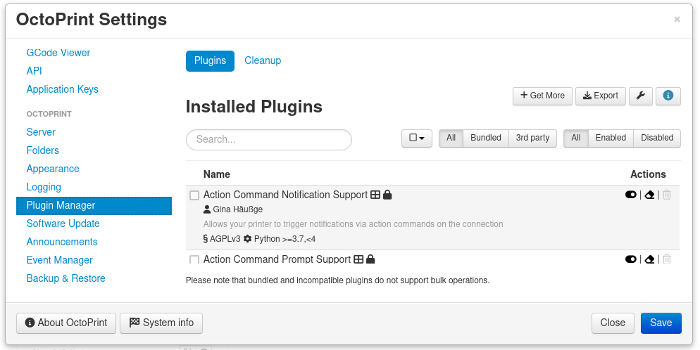
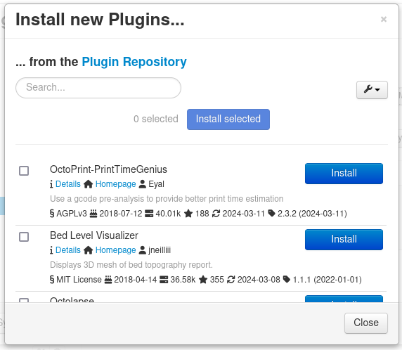

Mécanisme de mise en place d’un Dashboard
Installation du plugin
Pour l'installation du plugin :
Allez dans les paramètres en cliquant sur l'icone en forme de clé

Cliquez sur Plugin Manager sous OCTOPRINT puis sur Get more

Entrez A AJOUTER au niveau de la barre de recherche puis sur Install

Suivez ensuite les instructions pour redémarrer Octoprint
Parametrage du plugin
Lors du parametrage du plugin, vous aurez la possibilite d'activer ce que vous voir afficher sur votre dashboard pendant une impression et desactiver ceux que vous ne desirer voir.
Apercu du plugin

Le dashboard affichera lors d'une impression tout ce qui aurait ete active lors du parametrage. Dans ce cas par exemple, on a acces a : (CITER)